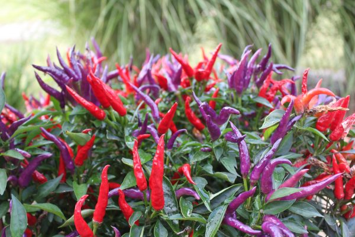
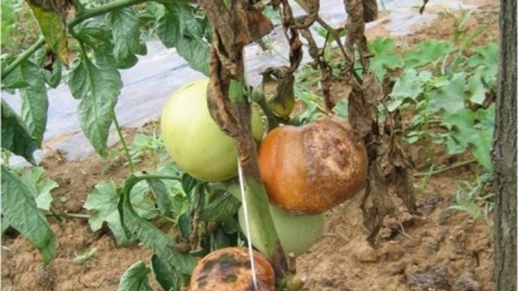
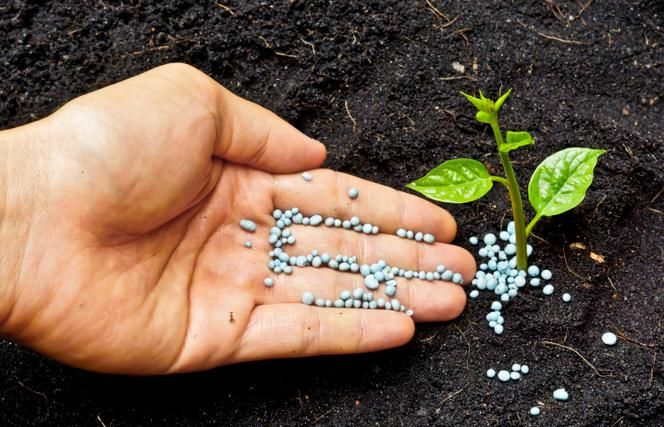
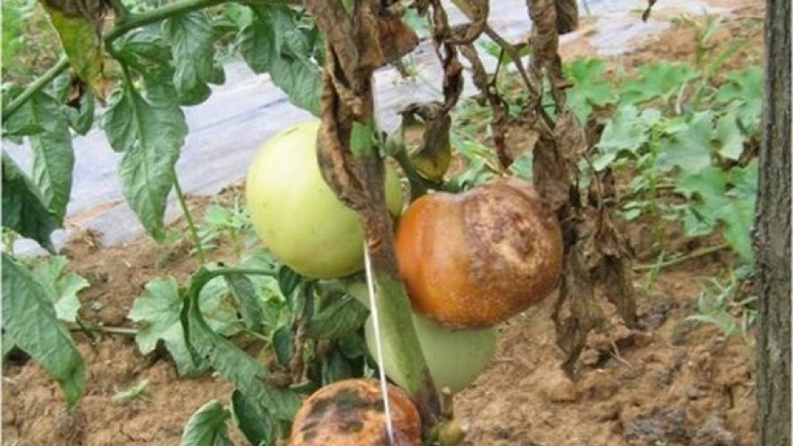
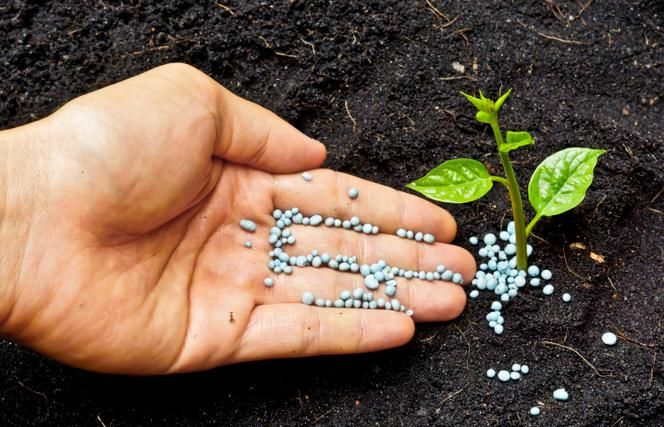

VIJESTI



Tko je sve kriv za ljutinu paprika?
Što je kapsaicin, a što dihidrokapsaicin? Hoćemo li uskoro jesti ljutu rajčicu? Postoje li kapsinoidi ili je to još jedna navlakuša? Više ...

Kako prepoznati najčešće bolesti u povrtlarstvu?
Najopasnije bolesti rajčice, paprike i krumpira, trenutno najzastupljenijeg povrća u svijetu, su svakako mikoze i viroze. Kako ih prepoznati i koje mjere zaštite primijeniti za suzbijanje? Više ...

Gnojidba biljaka
Gnojidba biljaka jedan je od najvažnijih tretmana njege, neophodan za pravilan razvoj biljaka, obilno cvjetanje i dobar prinos. Više ...